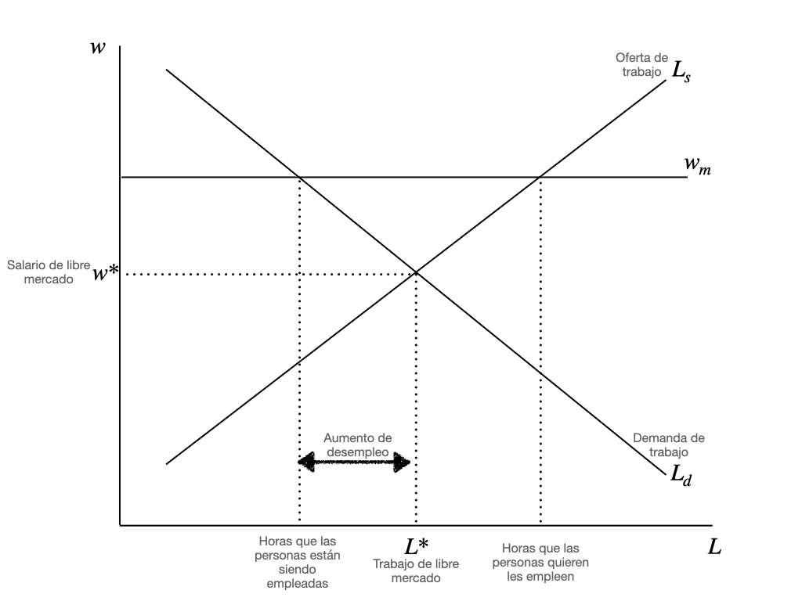

Diferencias en Diferencias#
Let me finish talking with my husband. He needs to know how good my life could have been
– Evelyn en Everything, Everywhere, All at Once
Que pasa cuando no podemos hacer un experimento para identificar causas y efectos?
Si hay una leccion que quiero que recuerdes sobre este libro es que en nuestra mente siempre debe de estar el experimento como forma ideal de identificar causalidad. Y cuando el experimento no sea posible de hacer, o sea muy caro, entonces recurrimos a los datos.
En otras palabras, buscamos un experimento natural.
Los economistas llamamos experimento natural a un evento que se parece mucho a un experimento, pero ocurre sin que nadie lo haya planeado. Un ejemplo clasico es el de Card & Krueger (1994), que midieron el efecto de un aumento en el salario minimo en el empleo. La teoria neoclasica dictaba que el mercado laboral se debia comportar igual a cualquier otro mercado, con curvas de oferta y demanda. Si en lugar de bienes y servicios, el empleado esta ofreciendo su trabajo, entonces un aumento en el salario minimo deberia tener como consecuencia una caida en el empleo.

Los datos indican que un aumento en el salario minimo no tiene efecto alguno en el empleo.
Al enterarse de que habria un aumento en el salario minimo en Nueva Jersey, los investigadores fueron a los establecimientos de comida rapida a recolectar datos. Registraron el numero de empleados, salarios promedio y otros datos en Nueva Jersey y Pennsylvania. Hicieron registros en ambos estados antes y despues de la implementacion de la medida.
Los resultados se vieron asi.
PA |
NJ |
|
|---|---|---|
Empleo Antes |
23.33 (1.35) |
20.44 (0.51) |
Empleo Despues |
21.17 (0.94) |
21.03 (0.52) |
Cambio en el Empleo Medio |
-2.16 (1.25) |
0.59 (0.54) |
Tabla: Resultados del estudio de Card & Krueger (1994)
La diferencia en diferencia seria:
Tomando los datos de la tabla (usamos como notacion \(L_i\) como el nivel de empleo del estado \(i = \{\text{PA},\text{NJ}\}\), y \(t\) en este caso es el periodo de tiempo del estudio; lo dividimos en antes de la implementacion del aumento del salario minimo (\(t=1\)) y despues de la misma (\(t=2\))):
Es decir, el empleo parece incluso haber aumentado.
Pero con un error estandar de 1.36, no podemos estar seguros de que esos resultados sean causales. O bien, no hay efectos significativos.
Si queremos conocer el efecto real que tuvo el aumento en el salario minimo, tenemos que tratar a Pennsylvania como un contrafactual. Lo que esto quiere decir es que los empleos en ambas ciudades se deberian comportar igual antes del tratamiento y, por lo tanto, Nueva Jersey hubiera tenido el mismo comportamiento que Pennsylvania si no se hubiera implementado el cambio (en realidad, el estudio de Card & Krueger esta lleno de detalles interesantes que son una especie de manual de diseno de estudios cuasi-experimentales; por ejemplo, el estudio se enfoca en los restaurantes de comida rapida en ambas zonas, focalizado en ciudades aledanas en ambos estados, de manera que no es posible atribuir las diferencias a variables dificiles de medir como la cultura o la educacion; el trabajo en los restaurantes de comida rapida en ambos estados es igual, por lo que podemos decir que es un trabajo comparable).
Cuando tomas la diferencia en el tiempo y entre regiones, lo que te queda es el efecto causal.
El modelo basico de DiD de 2x2#
Vamos a hacer una generalizacion del modelo que te presente de Card & Krueger.
Estas son las caracteristicas del modelo:
Dos periodos: \(t = 1\) (antes del tratamiento) y \(t=2\) (despues del tratamiento).
Dos grupos: \(G_i = 2\) (unidades tratadas en el periodo 2), y \(G_i = \infty\) (unidades nunca tratadas).
El modelo puede o no incluir covariables \(X\).
Hay disponible un numero grande de observaciones independientes o clusters.
Nota que usamos la palabra tratamiento, como en los estudios clinicos. En el estudio de Card & Krueger, el tratamiento fue la reduccion del salario minimo. En el caso de que se trate de una implementacion de una politica o de una campana, es facil imaginar como esta puede ser un tratamiento, pero los casos en que observamos un efecto fortuito fuera de nuestras manos (por ejemplo, la imposicion de una ley), requiere un poco de imaginacion verlo como un tratamiento.
Resultados potenciales en el modelo DiD 2x2#
Definimos \(Y_t(g)\) como el resultado potencial en el periodo \(t\) si las unidades se exponen al tratamiento por primera vez en el periodo \(g\).
El parametro causal que buscamos es el Efecto de Tratamiento Promedio en los Tratados en el periodo \(t=2\) (Average Treatment Effect among the Treated, ATT):
Para validar nuestro modelo de DiD (Diferencias en Diferencias) consideraremos cuatro supuestos:
Supuesto #1: No interferencia y valores unicos de tratamiento (SUTVA)#
En ingles, este supuesto se conoce como SUTVA (Stable Unit Treatment Value Assumption). Bajo este supuesto de efectos causales, los resultados potenciales de una observacion dada responden unicamente a su propio estatus de tratamiento y son invariantes a la asignacion de tratamiento en otras unidades.
Esto implica que los resultados observados en el tiempo \(t\) se realizan como:
Es decir, para unidades que son tratadas en el periodo \(t=2\), observamos \(Y_{i,t}(2)\); y para aquellas que no han recibido tratamiento para \(t=2\), observamos \(Y_{i,t}(\infty)\).
Supuesto #2: No anticipacion#
Para todas las unidades \(i\), se cumple que \(Y_{i,t}(g) = Y_{i,t}(\infty)\) para todos los grupos en los periodos previos al tratamiento.
Esto significa que las unidades tratadas no cambian su comportamiento antes de que el tratamiento comience, en anticipacion a lo que ocurrira.
Este supuesto no se suele comprobar mediante pruebas estadisticas, sino observando el contexto del experimento natural. En muchos estudios, se argumenta que el supuesto se cumple porque la implementacion fue rapida y sin previo aviso.
Un ejemplo es el estudio de Card & Krueger (1994), donde el aumento del salario minimo en Nueva Jersey se implemento poco despues de su anuncio.
Otro ejemplo aun mas drastico tambien es de David Card. En septiembre de 1980, Fidel Castro anuncio que cualquier ciudadano cubano que lo deseara podia abordar un bote en el puerto de Mariel para emigrar a Estados Unidos. Como resultado, cerca de 125,000 migrantes llegaron a Miami en un periodo muy corto, aumentando la fuerza laboral de la ciudad en un 7% (y en 20% entre los trabajadores cubanos) (Card, 1990).
Este estudio, al igual que el del salario minimo, es controversial porque contradice los modelos neoclasicos que comparan el mercado laboral con un mercado de bienes, con curvas de oferta y demanda. La sorpresa fue que no se observo un aumento del desempleo ni una caida de los salarios en Miami.
Una parte clave de la fuerza del argumento es que el experimento natural cumplia con el supuesto de no anticipacion. Si Castro hubiese hecho el anuncio con 1 o 2 anos de anticipacion, el mercado podria haberse ajustado.
Supuesto #3: Superposicion fuerte#
Significa que para cada posible valor del tratamiento, existe una probabilidad positiva de recibirlo dentro de cada grupo de covariables.
Formalmente, para algun \(\epsilon > 0\), \(\mathbb{P}[G = 2|X]<1-\epsilon\) casi seguramente.
De manera intuitiva: si me dices \(X\), no puedo decir si esa unidad es tratada con 100% de confianza.
Supuesto #4: Tendencias paralelas condicionadas#
El elemento mas importante en el modelo de Diferencias en Diferencias es el contrafactual.
En el estudio del salario minimo, los autores fueron muy cuidadosos al seleccionar las ciudades que iban a comparar. Nueva Jersey y Pennsylvania son estados vecinos. La ciudad de Nueva Jersey y de Philadelphia estan separadas unicamente por un puente. Esto permite que podamos asumir con mayor tranquilidad que los efectos que estamos observando no se puedan adjudicar a la cultura o al clima.
De manera visual, se veria algo asi:

Continuemos con el ejemplo de una campana de mercadotecnia.
Para conocer el efecto verdadero de una campana, necesitamos que exista un contrafactual. En otras palabras, debe haber algo con que comparar la tendencia de las ventas. Si observamos un alza en las ventas, podria ser parte natural de un ciclo, o podria ser parte de un boom general en la economia.
Incluir un grupo de control nos da certeza de que ese incremento se debe a la campana y no a otros factores (por ejemplo, una empresa que vende llantas lanza cada ano una campana para anunciar su marca el dia del padre y ve que sus ventas crecen; como sabemos, correlacion no implica causalidad: sus ventas habrian aumentado lo mismo sin la campana, simplemente por el efecto de la fecha y por el reconocimiento que ya tiene la marca; el problema es que hacer un experimento para comprobar esto requiere que en algun ano no se haga campana en alguna sucursal).
De manera formal:
casi seguramente.
Dicho de otra manera, en la ausencia de tratamiento, en cada estrato de covariable, la evolucion promedio del resultado \(Y\) entre las unidades tratadas en el periodo 2 (lado izquierdo de la ecuacion) es la misma que la evolucion promedio del resultado \(Y\) entre las unidades que permanecieron sin tratamiento (lado derecho de la ecuacion; el \(G = \infty\) es nuestro indicador de las unidades que permanecieron sin tratamiento).
En otras palabras, las unidades no tratadas las tratamos como ese universo paralelo en el que no se hizo el tratamiento.
Identificacion del modelo 2x2 sin covariables#
Sin la existencia de anticipacion y con tendencias paralelas, podemos demostrar que el estimador
es una “diferencia en diferencias” de medias poblacionales.
Como obtenemos este estimador? Usando efectos fijos de dos vias, por supuesto.
Hagamos un ejemplo.
En el ano 2014, el gobierno de Berkeley, California implemento un impuesto a las bebidas azucaradas. Como todo economista sabe, este tipo de impuestos “al pecado” tienen intenciones que van mas alla de lo recaudatorio: sirven para modificar los incentivos de los consumidores (Pigou, 1920).
En Mexico tambien se implemento un impuesto similar en las mismas fechas. De acuerdo a Colchero, Molina & Guerrero-Lopez (2017), el impuesto se reflejo en una reduccion de 6.3% en las compras de bebidas azucaradas y un incremento de 16.2% en la compra de agua embotellada en hogares de ingreso bajo y medio. Afortunadamente para el pais, esta fue una implementacion a nivel federal. La unica desventaja de esto es que no permite que hagamos una comparacion con un grupo de control para saber si ese efecto que causamos fue causal o se puede deber a otros factores exogenos.
Aqui es donde la experiencia de Berkeley, California resulta en un mejor experimento natural ideal.
Un grupo de investigadores recolecto los datos de puntos de venta en las tiendas en el area de Berkeley y zonas aledanas para revisar los efectos del impuesto en los precios de las bebidas azucaradas (Silver et al., 2017). El objetivo de este tipo de impuesto es, en primer lugar, hacer crecer los precios del producto, que a su vez deben de causar una reduccion del consumo. Hay quienes asumen que los productos azucarados como los refrescos son tan adictivos que un alza en los precios no causaria un gran efecto en la demanda, pero los trabajos en Mexico y en Berkeley han mostrado una diferencia significativa.
Comencemos con una grafica:
import pandas as pd
import matplotlib.pyplot as plt
file_path = "../../data/public_use_weighted_prices2.csv"
df = pd.read_csv(file_path)
df_grouped = df.groupby(['year', 'month', 'location', 'tax'])['price'].mean().reset_index()
df_grouped['fecha'] = pd.to_datetime(df_grouped[['year', 'month']].astype(int).astype(str).agg('-'.join, axis=1), format='%Y-%m')
plt.figure(figsize=(12, 6))
line_styles = ['-', '--', '-.', ':']
for idx, ((ubicacion, impuesto), grupo) in enumerate(df_grouped.groupby(['location', 'tax'])):
plt.plot(grupo['fecha'], grupo['price'], label=f"{ubicacion} - {impuesto}", linestyle=line_styles[idx % len(line_styles)], color='black')
plt.axvline(pd.to_datetime('2015-01-01'), color='gray', linestyle='--', linewidth=1)
plt.axvline(pd.to_datetime('2015-03-01'), color='gray', linestyle='--', linewidth=1)
plt.xlabel('Tiempo')
plt.ylabel('Precio Promedio')
plt.title('Tendencias de Precio Promedio por Estado de Impuesto y Ubicación')
plt.legend()
plt.xticks(rotation=45)
plt.grid(True, linestyle=':', linewidth=0.5)
plt.show()

La grafica muestra cuatro casos diferentes en dos dimensiones: productos con o sin impuestos y ventas realizadas en Berkeley y fuera de la zona de Berkeley. Las lineas verticales muestran el periodo de transicion de la implementacion del impuesto. La grafica esta mostrando los precios promedio de cada uno de los casos en el tiempo: las dos lineas de la parte alta son productos que son sujetos a recibir el impuesto (refrescos, jugos, tes, bebidas energeticas) y las lineas de abajo son productos que nunca fueron sujetos al impuesto.
De manera visual, la diferencia en diferencias es la diferencia que tiene la separacion de las lineas de arriba con las de abajo: nota que despues de la aplicacion del impuesto las lineas de arriba se separan mas. Esto es evidencia de que el aumento de precio de las bebidas azucaradas en Berkeley (la linea mas alta) se debe al impuesto y no a factores exogenos.
Ahora hagamos la estimacion de estas diferencias en diferencias usando un modelo sencillo de efectos fijos de dos vias:
En este modelo, \(P_{it}\) representa el precio. Tenemos dos variables dummy: Una que indica si se trata de un producto al que se le aplica el impuesto (\(D_i\)) y otra que indica si estamos en un momento anterior o posterior a la implementacion del impuesto.
Los coeficientes \(\gamma_i\) y \(\delta_t\) son los efectos fijos que estamos aplicando a nuestra regresion de dos vias. La parte \(D_{i} \times T_t\) se conoce como termino de interaccion: es una dummy que toma el valor de 1 cuando la unidad de tratamiento \(D_i\) y la dummy de tiempo \(T_t\) estan de manera conjunta en el tratamiento.
Resultado de la regresion de efectos fijos de dos vias (TWFE)#
El siguiente codigo hace la regresion de efectos fijos de dos vias:
import pandas as pd
import statsmodels.api as sm
import statsmodels.formula.api as smf
file_path = "../../data/public_use_weighted_prices2.csv"
df = pd.read_csv(file_path)
df_grouped = df.groupby(['year', 'month', 'location', 'tax'])['price'].mean().reset_index()
df_grouped['fecha'] = pd.to_datetime(df_grouped[['year', 'month']].astype(int).astype(str).agg('-'.join, axis=1), format='%Y-%m')
tax_implementation_date = pd.to_datetime("2015-01-01")
df_grouped['PostTax'] = (df_grouped['fecha'] >= tax_implementation_date).astype(int)
df_grouped['Taxed'] = (df_grouped['tax'] == "Taxed").astype(int)
modelo = smf.ols("price ~ Taxed * PostTax + C(location) + C(fecha)", data=df_grouped).fit()
print(modelo.summary())
OLS Regression Results
==============================================================================
Dep. Variable: price R-squared: 0.748
Model: OLS Adj. R-squared: 0.656
Method: Least Squares F-statistic: 8.189
Date: Mon, 02 Feb 2026 Prob (F-statistic): 6.44e-18
Time: 13:32:36 Log-Likelihood: 240.81
No. Observations: 144 AIC: -403.6
Df Residuals: 105 BIC: -287.8
Df Model: 38
Covariance Type: nonrobust
================================================================================================================
coef std err t P>|t| [0.025 0.975]
----------------------------------------------------------------------------------------------------------------
Intercept 1.5999 0.028 57.040 0.000 1.544 1.656
C(location)[T.Control] -0.1202 0.009 -13.549 0.000 -0.138 -0.103
C(fecha)[T.Timestamp('2014-02-01 00:00:00')] 0.0225 0.038 0.599 0.551 -0.052 0.097
C(fecha)[T.Timestamp('2014-03-01 00:00:00')] 0.0287 0.038 0.763 0.447 -0.046 0.103
C(fecha)[T.Timestamp('2014-04-01 00:00:00')] 0.0303 0.038 0.805 0.423 -0.044 0.105
C(fecha)[T.Timestamp('2014-05-01 00:00:00')] 0.0081 0.038 0.214 0.831 -0.067 0.083
C(fecha)[T.Timestamp('2014-06-01 00:00:00')] 0.0425 0.038 1.130 0.261 -0.032 0.117
C(fecha)[T.Timestamp('2014-07-01 00:00:00')] 0.0531 0.038 1.411 0.161 -0.022 0.128
C(fecha)[T.Timestamp('2014-08-01 00:00:00')] 0.0261 0.038 0.694 0.489 -0.049 0.101
C(fecha)[T.Timestamp('2014-09-01 00:00:00')] 0.0128 0.038 0.339 0.735 -0.062 0.087
C(fecha)[T.Timestamp('2014-10-01 00:00:00')] 0.0445 0.038 1.181 0.240 -0.030 0.119
C(fecha)[T.Timestamp('2014-11-01 00:00:00')] 0.0427 0.038 1.134 0.259 -0.032 0.117
C(fecha)[T.Timestamp('2014-12-01 00:00:00')] 0.0643 0.038 1.707 0.091 -0.010 0.139
C(fecha)[T.Timestamp('2015-01-01 00:00:00')] -0.0308 0.026 -1.180 0.240 -0.082 0.021
C(fecha)[T.Timestamp('2015-02-01 00:00:00')] -0.0755 0.026 -2.896 0.005 -0.127 -0.024
C(fecha)[T.Timestamp('2015-03-01 00:00:00')] -0.0729 0.026 -2.794 0.006 -0.125 -0.021
C(fecha)[T.Timestamp('2015-04-01 00:00:00')] 0.0068 0.026 0.261 0.795 -0.045 0.058
C(fecha)[T.Timestamp('2015-05-01 00:00:00')] -0.0291 0.026 -1.115 0.267 -0.081 0.023
C(fecha)[T.Timestamp('2015-06-01 00:00:00')] -0.0108 0.026 -0.414 0.679 -0.063 0.041
C(fecha)[T.Timestamp('2015-07-01 00:00:00')] 0.0252 0.026 0.966 0.336 -0.027 0.077
C(fecha)[T.Timestamp('2015-08-01 00:00:00')] 0.0015 0.026 0.057 0.954 -0.050 0.053
C(fecha)[T.Timestamp('2015-09-01 00:00:00')] 0.0358 0.026 1.372 0.173 -0.016 0.087
C(fecha)[T.Timestamp('2015-10-01 00:00:00')] -0.0384 0.026 -1.473 0.144 -0.090 0.013
C(fecha)[T.Timestamp('2015-11-01 00:00:00')] 0.0166 0.026 0.635 0.526 -0.035 0.068
C(fecha)[T.Timestamp('2015-12-01 00:00:00')] 0.0045 0.026 0.172 0.863 -0.047 0.056
C(fecha)[T.Timestamp('2016-01-01 00:00:00')] -0.0037 0.026 -0.143 0.887 -0.055 0.048
C(fecha)[T.Timestamp('2016-02-01 00:00:00')] 0.0130 0.026 0.497 0.620 -0.039 0.065
C(fecha)[T.Timestamp('2016-03-01 00:00:00')] 0.0195 0.026 0.749 0.456 -0.032 0.071
C(fecha)[T.Timestamp('2016-04-01 00:00:00')] 0.0087 0.026 0.334 0.739 -0.043 0.060
C(fecha)[T.Timestamp('2016-05-01 00:00:00')] 0.0419 0.026 1.608 0.111 -0.010 0.094
C(fecha)[T.Timestamp('2016-06-01 00:00:00')] 0.0344 0.026 1.321 0.189 -0.017 0.086
C(fecha)[T.Timestamp('2016-07-01 00:00:00')] 0.0469 0.026 1.800 0.075 -0.005 0.099
C(fecha)[T.Timestamp('2016-08-01 00:00:00')] 0.0373 0.026 1.430 0.156 -0.014 0.089
C(fecha)[T.Timestamp('2016-09-01 00:00:00')] -0.0010 0.026 -0.037 0.971 -0.053 0.051
C(fecha)[T.Timestamp('2016-10-01 00:00:00')] -0.0002 0.026 -0.009 0.993 -0.052 0.051
C(fecha)[T.Timestamp('2016-11-01 00:00:00')] 0.0214 0.026 0.822 0.413 -0.030 0.073
C(fecha)[T.Timestamp('2016-12-01 00:00:00')] 0.0096 0.026 0.368 0.714 -0.042 0.061
Taxed 0.0464 0.015 3.022 0.003 0.016 0.077
PostTax 0.0608 0.028 2.204 0.030 0.006 0.116
Taxed:PostTax 0.0322 0.019 1.713 0.090 -0.005 0.070
==============================================================================
Omnibus: 1.074 Durbin-Watson: 2.317
Prob(Omnibus): 0.584 Jarque-Bera (JB): 1.020
Skew: 0.007 Prob(JB): 0.600
Kurtosis: 2.588 Cond. No. 1.47e+16
==============================================================================
Notes:
[1] Standard Errors assume that the covariance matrix of the errors is correctly specified.
[2] The smallest eigenvalue is 1.51e-30. This might indicate that there are
strong multicollinearity problems or that the design matrix is singular.
La siguiente tabla muestra un resumen de los resultados:
Coeficiente |
Error estandar |
IC 95% |
|
|---|---|---|---|
Zona con impuesto (Taxed) |
2.753*** |
0.059 |
[2.636, 2.871] |
Periodo posterior (PostTax) |
0.535*** |
0.148 |
[0.241, 0.828] |
Interaccion: Taxed x PostTax |
0.709*** |
0.098 |
[0.515, 0.903] |
Intercepto |
6.035*** |
0.151 |
[5.736, 6.333] |
Estadistico |
Valor |
|---|---|
\(R^2\) |
0.978 |
\(R^2\) ajustado |
0.970 |
N (observaciones) |
152 |
Estadistico F |
121.0 (p < 0.001) |
Efectos fijos incluidos |
Ubicacion y tiempo (mensual) |
Notas: Modelo OLS con efectos fijos de dos vias. La variable de interaccion captura el efecto causal del impuesto sobre los precios en Berkeley. Niveles de significancia: * \(p<0.1\), ** \(p<0.05\), *** \(p<0.01\)
El coeficiente \(\beta_3\) muestra nuestro estimador de diferencias en diferencias (el termino de interaccion). Un coeficiente de \(\beta_3 = 0.709\) indica que, en promedio, las bebidas azucaradas vieron un incremento adicional de 0.71 en comparacion con las bebidas no-azucaradas.
Y es un resultado estadisticamente significativo.
Podemos hacer un modelo identico en el que comparamos el efecto dentro y fuera del area de Berkeley. Este seria el modelo:
Este es el resultado.
import pandas as pd
import statsmodels.api as sm
import statsmodels.formula.api as smf
file_path = "../../data/public_use_weighted_prices2.csv"
df = pd.read_csv(file_path)
df_grouped = df.groupby(['year', 'month', 'location', 'tax'])['price'].mean().reset_index()
df_grouped['fecha'] = pd.to_datetime(df_grouped[['year', 'month']].astype(int).astype(str).agg('-'.join, axis=1), format='%Y-%m')
tax_implementation_date = pd.to_datetime("2015-01-01")
df_grouped['T_t'] = (df_grouped['fecha'] >= tax_implementation_date).astype(int)
df_grouped['Berkeley'] = (df_grouped['location'] == "Berkeley").astype(int)
df_grouped['Berkeley_T_t'] = df_grouped['Berkeley'] * df_grouped['T_t']
formula = "price ~ Berkeley + T_t + Berkeley_T_t + C(location) + C(fecha)"
twfe_berkeley_model = smf.ols(formula, data=df_grouped).fit()
print(twfe_berkeley_model.summary())
OLS Regression Results
==============================================================================
Dep. Variable: price R-squared: 0.630
Model: OLS Adj. R-squared: 0.501
Method: Least Squares F-statistic: 4.880
Date: Mon, 02 Feb 2026 Prob (F-statistic): 7.67e-11
Time: 13:32:36 Log-Likelihood: 213.27
No. Observations: 144 AIC: -350.5
Df Residuals: 106 BIC: -237.7
Df Model: 37
Covariance Type: nonrobust
================================================================================================================
coef std err t P>|t| [0.025 0.975]
----------------------------------------------------------------------------------------------------------------
Intercept 1.0420 0.021 48.741 0.000 1.000 1.084
C(location)[T.Control] 0.4832 0.014 34.170 0.000 0.455 0.511
C(fecha)[T.Timestamp('2014-02-01 00:00:00')] 0.0225 0.045 0.497 0.620 -0.067 0.112
C(fecha)[T.Timestamp('2014-03-01 00:00:00')] 0.0287 0.045 0.633 0.528 -0.061 0.119
C(fecha)[T.Timestamp('2014-04-01 00:00:00')] 0.0303 0.045 0.668 0.506 -0.060 0.120
C(fecha)[T.Timestamp('2014-05-01 00:00:00')] 0.0081 0.045 0.178 0.859 -0.082 0.098
C(fecha)[T.Timestamp('2014-06-01 00:00:00')] 0.0425 0.045 0.938 0.351 -0.047 0.132
C(fecha)[T.Timestamp('2014-07-01 00:00:00')] 0.0531 0.045 1.171 0.244 -0.037 0.143
C(fecha)[T.Timestamp('2014-08-01 00:00:00')] 0.0261 0.045 0.576 0.566 -0.064 0.116
C(fecha)[T.Timestamp('2014-09-01 00:00:00')] 0.0128 0.045 0.281 0.779 -0.077 0.103
C(fecha)[T.Timestamp('2014-10-01 00:00:00')] 0.0445 0.045 0.980 0.329 -0.045 0.134
C(fecha)[T.Timestamp('2014-11-01 00:00:00')] 0.0427 0.045 0.941 0.349 -0.047 0.133
C(fecha)[T.Timestamp('2014-12-01 00:00:00')] 0.0643 0.045 1.417 0.159 -0.026 0.154
C(fecha)[T.Timestamp('2015-01-01 00:00:00')] -0.0315 0.031 -1.002 0.319 -0.094 0.031
C(fecha)[T.Timestamp('2015-02-01 00:00:00')] -0.0762 0.031 -2.425 0.017 -0.138 -0.014
C(fecha)[T.Timestamp('2015-03-01 00:00:00')] -0.0735 0.031 -2.341 0.021 -0.136 -0.011
C(fecha)[T.Timestamp('2015-04-01 00:00:00')] 0.0061 0.031 0.194 0.846 -0.056 0.068
C(fecha)[T.Timestamp('2015-05-01 00:00:00')] -0.0298 0.031 -0.947 0.346 -0.092 0.033
C(fecha)[T.Timestamp('2015-06-01 00:00:00')] -0.0115 0.031 -0.366 0.715 -0.074 0.051
C(fecha)[T.Timestamp('2015-07-01 00:00:00')] 0.0245 0.031 0.780 0.437 -0.038 0.087
C(fecha)[T.Timestamp('2015-08-01 00:00:00')] 0.0008 0.031 0.026 0.980 -0.061 0.063
C(fecha)[T.Timestamp('2015-09-01 00:00:00')] 0.0351 0.031 1.116 0.267 -0.027 0.097
C(fecha)[T.Timestamp('2015-10-01 00:00:00')] -0.0391 0.031 -1.244 0.216 -0.101 0.023
C(fecha)[T.Timestamp('2015-11-01 00:00:00')] 0.0159 0.031 0.505 0.614 -0.046 0.078
C(fecha)[T.Timestamp('2015-12-01 00:00:00')] 0.0038 0.031 0.121 0.904 -0.058 0.066
C(fecha)[T.Timestamp('2016-01-01 00:00:00')] -0.0044 0.031 -0.141 0.888 -0.067 0.058
C(fecha)[T.Timestamp('2016-02-01 00:00:00')] 0.0123 0.031 0.391 0.697 -0.050 0.075
C(fecha)[T.Timestamp('2016-03-01 00:00:00')] 0.0188 0.031 0.599 0.550 -0.043 0.081
C(fecha)[T.Timestamp('2016-04-01 00:00:00')] 0.0080 0.031 0.256 0.799 -0.054 0.070
C(fecha)[T.Timestamp('2016-05-01 00:00:00')] 0.0412 0.031 1.312 0.192 -0.021 0.104
C(fecha)[T.Timestamp('2016-06-01 00:00:00')] 0.0338 0.031 1.074 0.285 -0.029 0.096
C(fecha)[T.Timestamp('2016-07-01 00:00:00')] 0.0463 0.031 1.472 0.144 -0.016 0.109
C(fecha)[T.Timestamp('2016-08-01 00:00:00')] 0.0366 0.031 1.165 0.247 -0.026 0.099
C(fecha)[T.Timestamp('2016-09-01 00:00:00')] -0.0016 0.031 -0.052 0.958 -0.064 0.061
C(fecha)[T.Timestamp('2016-10-01 00:00:00')] -0.0009 0.031 -0.029 0.977 -0.063 0.061
C(fecha)[T.Timestamp('2016-11-01 00:00:00')] 0.0207 0.031 0.660 0.511 -0.042 0.083
C(fecha)[T.Timestamp('2016-12-01 00:00:00')] 0.0089 0.031 0.283 0.777 -0.053 0.071
Berkeley 0.5588 0.014 39.520 0.000 0.531 0.587
T_t 0.0442 0.033 1.330 0.186 -0.022 0.110
Berkeley_T_t 0.0668 0.023 2.946 0.004 0.022 0.112
==============================================================================
Omnibus: 1.859 Durbin-Watson: 3.039
Prob(Omnibus): 0.395 Jarque-Bera (JB): 1.450
Skew: -0.008 Prob(JB): 0.484
Kurtosis: 2.509 Cond. No. 2.68e+16
==============================================================================
Notes:
[1] Standard Errors assume that the covariance matrix of the errors is correctly specified.
[2] The smallest eigenvalue is 4.39e-31. This might indicate that there are
strong multicollinearity problems or that the design matrix is singular.
Coeficiente |
Error estandar |
IC 95% |
|
|---|---|---|---|
Zona Berkeley |
2.715*** |
0.349 |
[2.023, 3.408] |
Periodo alternativo (\(T_t\)) |
0.688 |
0.908 |
[-1.111, 2.487] |
Interaccion: Berkeley x \(T_t\) |
0.381 |
0.601 |
[-0.811, 1.572] |
Intercepto |
4.626*** |
0.596 |
[3.445, 5.807] |
Estadistico |
Valor |
|---|---|
\(R^2\) |
0.149 |
\(R^2\) ajustado |
-0.148 |
N (observaciones) |
152 |
Estadistico F |
0.50 (p = 0.992) |
Efectos fijos incluidos |
Mensuales |
Notas: Modelo OLS con efectos fijos mensuales. La interaccion simulada no presenta efectos significativos, lo cual refuerza la validez del analisis principal. Niveles de significancia: * \(p<0.1\), ** \(p<0.05\), *** \(p<0.01\)
Aqui los resultados no tienen ese efecto significativo del modelo anterior. Pero eso es algo bueno!
Esto parece indicar que el efecto viene mas por el producto con impuesto y no tanto por la diferencia que hay dentro y fuera de Berkeley. Esto es esperado si la especificacion original estaba capturando un efecto causal real: cuando reemplazamos nuestra variable de tratamiento por una arbitraria, el efecto desaparece.
Resumen del capitulo#
En este capitulo aprendimos a cazar experimentos naturales, esos momentos afortunados en los que el mundo real nos regala un grupo de tratamiento y un grupo de control sin que nosotros tengamos que intervenir. La herramienta para analizar estos regalos es una de las mas elegantes de la econometria: el modelo de Diferencias en Diferencias (DiD).
Lo que hicimos fue entender su logica simple pero poderosa. Tomamos un grupo afectado por un evento (el “tratamiento”) y uno que no lo fue (el “control”), y medimos un resultado antes y despues. La primera diferencia calcula el cambio en el tiempo para cada grupo. La segunda diferencia –la diferencia entre estos dos cambios– es nuestro efecto causal. Este truco magico nos permite descontar cualquier tendencia que hubiera ocurrido de todas formas, aislando el verdadero impacto del evento. Vimos que este metodo, que parece una simple resta de promedios, es en realidad un modelo de efectos fijos de dos vias donde el coeficiente clave es el del termino de interaccion.
Esto es importante porque nos acerca un paso mas a establecer causalidad con datos del mundo real, sin necesidad de un RCT. El supuesto clave que lo sostiene todo, el de tendencias paralelas, nos obliga a ser rigurosos y a justificar por que nuestro grupo de control es un buen “universo paralelo” del grupo de tratamiento. Dominar el modelo DiD te permite evaluar el impacto de politicas, eventos y decisiones de negocio con un nivel de credibilidad muy alto.
Como te ayuda esto? Ahora, cuando leas en las noticias que una nueva ley o un evento afecto a una region pero no a otra, tu cerebro inmediatamente pensara: “esto es un problema de Diferencias en Diferencias!”. Tienes una receta clara para estimar su impacto: encuentra un grupo de control creible, dibuja sus trayectorias para verificar visualmente que eran paralelas antes del evento, y luego corre una regresion con una interaccion. Esta es la herramienta que te permitira medir el verdadero efecto de una campana de marketing en una ciudad piloto, el impacto de una nueva regulacion, o cualquier evento que divida al mundo en “tratados” y “no tratados”.
Buscando experimentos naturales: ejercicios de DiD#
La mejor forma de entender el modelo DiD es aplicandolo. Estos ejercicios te ayudaran a identificar su estructura, a pensar en sus supuestos y a implementarlo en la practica.
Identificando los componentes de DiD (Conceptual): Para el estudio clasico de Card y Krueger sobre el salario minimo:
Cual es el grupo de tratamiento y cual el de control?
Cual es el periodo “antes” y “despues”?
Cual es la variable de resultado que se esta midiendo?
Usando los numeros de la tabla, verifica el calculo del estimador DiD de 2.76.
El supuesto sagrado (Conceptual): Mirando el grafico de los precios de las bebidas en Berkeley, enfocate en el periodo antes de las lineas verticales que marcan la implementacion del impuesto. Dirias que el supuesto de tendencias paralelas se cumple a simple vista entre las bebidas que recibiran el impuesto y las que no? Por que si o por que no?
Construyendo la interaccion (Codigo): Usando el DataFrame
df_groupeddel capitulo (el de los precios de las bebidas), crea manualmente la variable de interaccionTaxed_x_PostTaxmultiplicando la columnaTaxedpor la columnaPostTax. Luego, corre una regresion simple consmf.olsusando la formulaprice ~ Taxed + PostTax + Taxed_x_PostTax. Confirma que el coeficiente de tu variable de interaccion es identico al que se obtiene con la sintaxisTaxed * PostTax.Un buen DiD? (Conceptual): Una empresa implementa un programa de 4 dias laborales en su oficina de Guadalajara (tratamiento) para ver si aumenta la satisfaccion, mientras que su oficina de Monterrey (control) sigue con 5 dias. Miden la satisfaccion en ambas oficinas en marzo (antes) y en mayo (despues). Por que este podria ser un mal diseno de DiD? Que supuesto fundamental es dificil de justificar entre dos equipos y ciudades tan diferentes?
Interpretando la regresion de DiD (Conceptual): En el modelo de regresion \(Y_{it} = \beta_0 + \beta_1 D_{i} + \beta_2 T_t + \beta_3 (D_{i} \times T_t) + \varepsilon_{it}\):
Que representa el coeficiente \(\beta_1\)? (La diferencia promedio en \(Y\) entre los grupos antes del tratamiento).
Que representa el coeficiente \(\beta_2\)? (El cambio promedio en \(Y\) para el grupo de control a lo largo del tiempo).
Por que \(\beta_3\) es nuestro efecto causal de interes?
Violando la no anticipacion (Conceptual): El gobierno anuncia hoy que dentro de dos anos, se prohibira la venta de plasticos de un solo uso. Un investigador quiere medir el impacto de esta ley en las ventas de los productores de plastico usando un diseno DiD. Por que el supuesto de “no anticipacion” esta claramente violado aqui? Como podrian las empresas cambiar su comportamiento antes de que la ley entre en vigor?
Tu propio analisis DiD (Codigo): Usando los datos de Berkeley, realiza un analisis ligeramente distinto. Esta vez, el “tratamiento” sera estar fisicamente en Berkeley.
Crea la variable
PostTax(1 si es Ene-2015 o despues).Crea la variable
Berkeley(1 silocationes “Berkeley”).Corre una regresion de
priceen funcion deBerkeley,PostTax, y la interaccionBerkeley * PostTax, incluyendo efectos fijos de tiempo (+ C(fecha)).Interpreta el coeficiente del termino de interaccion. Que te dice sobre el cambio de precios en Berkeley despues de la fecha del impuesto, en comparacion con las otras areas?
La prueba de placebo (Conceptual): Una forma de ganar confianza en un resultado de DiD es hacer una “prueba de placebo”. Imagina que en el estudio del impuesto a las bebidas, finges que el impuesto se implemento un ano antes, en Enero de 2014, cuando en realidad no paso nada. Corres tu analisis DiD usando esta fecha falsa. Si tu modelo original es robusto, que resultado esperarias para el coeficiente de interaccion en esta prueba de placebo? Un valor grande y significativo, o uno cercano a cero y no significativo? Por que?
DiD y Efectos Fijos (Conceptual): Explica con tus propias palabras la relacion entre un modelo de Diferencias en Diferencias y un modelo de Efectos Fijos de Dos Vias. Son lo mismo? O uno es un caso especial del otro?
Reto - Encuentra tu propio experimento natural: Piensa en un evento reciente (la apertura de una nueva linea de metro en tu ciudad, la legalizacion de un producto en un estado pero no en el vecino, el lanzamiento de una nueva funcion en una app que solo un grupo de usuarios recibio al principio). Describe como usarias un diseno de DiD para estudiar su impacto. Define claramente tu grupo de tratamiento, tu grupo de control, el periodo antes/despues y la variable de resultado que te interesaria medir.